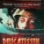

|
 | Lehet, hogy túlbiztosítottam magam? Lehet. De nem baj: a módszer bevált.
Már
régóta adós vagyok magamnak azzal, hogy továbbviszem a
Gergényi-Szabadfi-ügyet: még a Morvai Krisztinával együtt lévõ Civil
Jogász Bizottság ülésére hívtak meg egyszer, ahol is bejelentettem,
hogy bár a két fõrendõr elleni feljelentéseimet (Szabadfit a
tévéostromos kisrendõr-cserbenhagyás, Gergényit a szemkilövetés és
csatolt részeinek irányítása) visszadobták, de a dolgot nem hagyom
annyiban. Nevezetesen: kihasználom azt a lehetõséget, hogy az eljáró
ügyészségek - bár röhejesen, bûncselekmény hiányában szüntették meg az
ügyeket, mégsem éltek azzal a kézenfekvõ lehetõséggel, hogy hamis vád
címén engem állítsanak a bíróság elé. Az már mégiscsak nagyon snassz
lett volna - annyira még tart a jogállami látszat megrepedezett máza,
hogy egy ilyen per jókora indulatokat váltott volna ki.
Igen ám,
de a büntetõjog nem így mûködik. Ha valaki csontra alaptalan vádat emel
mások ellen, akkor illik emiatt õt eljárás alá vonni. Következésképpen,
ha ez elmarad, ott valami hézag van...
Mindenki tudja, aki a
magyar valóságról némi ismerettel bír, hogy a rendõrség
bûncselekményeket követett el 2006. október 23-án (sõt, már a megelõzõ
szeptemberi éjszakákon is). Egyértelmû, hogy miért vagyok védett a
hamis vád ellen: mert a vádam objektíve valós és megalapozott, csak
éppen a hatóság nem akar - politikai okból - eljárni a tettesek ellen.
Nos:
rengeteg ilyen-olyan dolgom volt, építkezem is (s. k.), dolgozom is
mindenfélét, írok is szanaszét, így aztán csak formálgattam magamban a
feljelentést az ügyet elsinkófáló ügyészek ellen. No de most! Nehéz
frappánsabb húzást kitalálni, mint bemenni a Budapesti Nyomozó
Ügyészségre azzal, hogy kérem tisztelettel, hoztam egy feljelentést a
vezetõhelyettesük ellen... Ezt nem lehetett kihagyni.
Ugyanakkor
volt egy problémám. Az, hogy elvbõl nem veszek igénybe ügyvédet (bár a
tanút is megilleti a védelem joga ma már), hiszen ha egyszer
megtanultam a szakmát, illik a saját dolgaimat egyedül intézni. Ámde az
egyedüllét nagy hátránya, hogy az embert békésen szarrá verhetik,
aláírathatnak vele erõszakkal akármit, meghamisíthatják a vallomását,
és nem sokat tehet ellene. Ekkora "szemtelenség" hatására nagyon is
könnyen kinyílik a hatósági pofonzsák - és egymagam tehetetlen lennék.
Ne feledjük, hány teljesen ártatlan embert vertek félig agyon
ilyen-olyan kapitányságokon másfél éve!
Hogyan lehet ezt kivédeni?
A
megoldás a következõ volt. Mivel semmiképpen nem akartam kihagyni, hogy
az oroszlánbarlangba bemenve megcibáljam az oroszlán bajszát,
biztosítanom kellett, hogy ezt sértetlenül megússzam. Õrizetbevétel még
belefért volna (bár azért erre sem vágytam különösebben, gyerekek,
munka, miegyéb), de legjobb ép bõrrel kijönni, dühtõl fújtató
ügyészeket hagyni magam mögött. Erre azt találtam ki, hogy széles
nyilvánosság elõtt közzéteszem: el vagyok szánva az õrizetbevételre
(végtére is erre el is voltam - csak éppen egyáltalán nem vágytam rá).
Feltételeztem, hogy elég hatósági szem olvassa akár ezt a blogot, akár
a Bombagyárat - attól nem tartottam, hogy az információ nem jut el a
helyére.
Nos, ezek után mit tehet egy ügyész - még akkor is, ha
csakugyan megcselekszem, hogy ilyesféle feljelentéssel állítok be, és
annyira provokatív vagyok a kihallgatás során, amennyire csak lehet?
Összeverethet - de nagyon nem jó húzás, látszik, hogy nem vagyok
hülyegyerek, nyilván megmutattam magam valakinek, mielõtt odamentem,
hogy semmi bajom. Valami ürüggyel fogdára vágathat pár órára - de az
elõre beharangozott egyszemélyes flashmob miatt túl sokan kíváncsiak
arra, hogy mi történik velem...
A most már teljes õszinteséggel
bevallható stratégia tehát ez volt: beharangozom amit tenni fogok,
bejelentem, hogy megtorlásra számítok, és csendesen vigyorgok: nincs jó
ellenlépés... Semmi más dolgom, mint megtenni, amit kilátásba
helyeztem, pimaszkodni, és nézni, ki tudom-e hozni annyira a sodrából a
delikvenst, hogy a jóslatom önbeteljesítõ legyen. Ha igen, akkor is
nyertem, ha nem, akkor is - mert akkor az asztalukra történõ virtuális
odapössentést bántatlanul úszom meg, miközben vérben forog a szemük,
mint a láncát tépõ szelindekeknek.
"Budapesti Nyomozó Ügyészség részére Helyben, személyesen kézbesítve! Tisztelt Budapesti Nyomozó Ügyészség!
Tekintettel arra, hogy – megítélésem szerint utólagos (alaptalan) meggyanúsításom szándékával – „tanúkihallgatásra” idéztek be igen sajátosan, telefonon keresztül, felhasználom a nagyszerû alkalmat, hogy régi függõ ügyeimet Önöknél folytassam feljelentés megtétele útján. Ezennel feljelentést teszek a Btk. 225. §-ába ütközõ hivatali visszaélés bûncselekménye miatt1/ Dr. Turi András vezetõhelyettes ügyész (Budapesti Nyomozó Ügyészség)2/ Dr. Margl Zoltán ales. Csoportvezetõ katonai ügyész (Budapesti Katonai Ügyészség)3/ Dr. Ihász Sándor fõvárosi fõügyész (Fõvárosi Fõügyészség)4/ Dr. Szabadvári Péter ezredes (Katonai Fõügyészség)
ellen,mivel fent nevezettek alaposan gyanúsíthatóak azzal, hogy az általam megtett, Gergényi Péter volt budapesti rendõrfõkapitány és Dr. Szabadfi Árpád volt ORFK helyettes vezetõ elleni feljelentések elbírálásánál a feljelentett személyek javára jogtalan elõnyt okozva hivatali kötelezettségüket megszegték, a bizonyítékokat és közismert tényeket szándékosan iratellenesen és a logika szabályait megszegve mérlegelték és megakadályozták, hogy a két feljelentett rendõri vezetõ ellen a független bíróság folytathassa le a jól megérdemelt büntetõeljárást. Ügyszámok, melyeken a jogellenes határozatokat meghozták: 1/ Nyom. 728/2007; 2/ B.XIII.207/2007; 3/ NÜ 13241/2007; és 4/ Bf.VI. 112/2007.Dr. Turi András terhére felmerül még a magán- avagy közokirathamisítás gyanúja is (attól függõen, hogy az ügyészségi határozat milyen okiratnak minõsül), tekintettel arra, hogy fenti ügyszámon „elírást” javított valótlannak imponáló indoklással: Gergényi Pétert – akirõl mellesleg országszerte, médiahírek alapján köztudott volt, hogy a BRFK vezetéséhez elvárt iskolája sem volt meg, ezért is nem lehetett az ORFK vezetõje sem – doktori címmel ruházta fel. A kijavító határozat szerint „hivatalból” javította; de ez 2007. június 5-én kelt, miközben az én panaszom, mely ezt is kifogásolta, június 1-én datálódott. Hogy Dr. Turi András elkövette-e a szándékosan valótlan indoklás írásával az okirathamisítás valamelyik alakzatát, az a határozata elleni panasz ügyészségi kézbesítésének és iktatásának vizsgálata útján dönthetõ el. Amennyiben már látta a panaszt, akkor annak helytadva lett volna kötelessége javítani az iratot, és nem „hivatalból”. Dr. Margl Zoltán terhére felróható az a súlyos jogi mûhiba is (mely szakmai alkalmatlanság címén történõ azonnali menesztését is szükségessé tenné), hogy a feljelentést a Be. 174. § (1) bek. f/ pontja alapján (mert már jogerõsen elbírálták) utasította el. Elsõéves joghallgatót kivágnak a vizsgáról, ha az alaki és anyagi jogerõ közötti különbséget nem ismeri (köztudott volt, hogy a feljelentettek semmilyen bíróság elé nem kerültek!) – egy vezetõ katonai ügyésztõl ez vagy a szakmai teljes alkalmatlanságot, vagy a hivatali visszaélés egyenes szándékkal elkövetése közben a totális indolenciát mutatja, mely kapcsán még a formaságokra sem fordítja a minimális gondot sem, és kirívó pimaszsággal úgy utasítja el a feljelentést, ahogy azt nyilvánvalóan nem lehetne – mert megteheti… Megjegyzem, felettesével ezután beszéltem telefonon, közölve vele az esetet, de semmilyen eljárást Dr. Margl ellen nem indított… A feljelentés kiterjed mindazon ismeretlen tettesekre is, akik ügyészségi felettesként, avagy kormánytagként-kormánytisztviselõként netán befolyásolták a megnevezetteket abba az irányba, hogy nyilvánvalóan alaptalanul, tisztán politikai indokból utasítsák el a feljelentéseket, és tegyék lehetetlenné a tettesek felelõsségre vonását a 2006. október 23-i rendõri brutalitásra kiadott parancsokért, illetve a tévéostrom alkalmával a szorult helyzetbe került védõ rendõrök számára a segítségnyújtás elmulasztásáért, mely a sértettek testi épségét, életét is veszélyeztette. Részletes indoklás helyett utalok az elutasított feljelentéseimben leírtakra; továbbá arra, hogy Dr. Sólyom László, a Magyar Köztársaság elnöke számos nyilatkozatában hangsúlyozta, hogy a vétkes rendõrök – a vezetõket is beleértve - elszámoltatása és megbüntetése parancsoló szükségszerûség lett volna. Utalok továbbá arra, hogy az események óta a vétkesnek tartott alacsony rangú rendõrök elleni eljárásban a parancskiadók személyét nagy aggódással nem vizsgálták; továbbá arra, hogy immár számos alkalommal kiderült ártatlan külföldi, illetve teljesen, mindenben vétlen egyetemisták brutális összeverése – melyben indult perek kapcsán még a jobboldali rokonszenvvel semmiképpen nem vádolható Cserni János bíró is kiemelte indoklásában, hogy a rendõr tanúk össze-vissza hazudoztak. Csatolom továbbá a Civil Jogász Bizottság által összegyûjtött, azóta nagyrészt már tisztázott, ártatlanok elleni brutalitásokról szóló DVD-összeállítást. Utalok arra, hogy a rendõrség „szakszerûtlenségét” – a féllegális Kossuth téri tüntetõk teljesen legális Fidesz-gyûlésbe terelését – immár a belsõ vizsgálat is megállapította, bár sajnálatosan következtetést nem vont le, noha a szándékosságot minimum vélelmezni kellett volna. Ki kell jelentenem, hogy a jogellenes tüntetés vagy gyülekezés elleni aránytalan és veszélyes rendõri brutalitás sem indokolható; mint ahogy a rendõrök tömeges azonosító nélküli szereplése (mellyel kapcsolatban Gergényi Péter súlyosat hazudott eleinte) sem. Erre a parancs adójának személyét hivatalosan a hatóságok nem kívánták kideríteni… Javaslom, sõt követelem a bûnös rendõri vezetõk elleni eljárás újra megindítását, és az õket fedezõ ügyészek (esetleges kormánytagok) szigorú megbüntetését. Javaslom a feljelentettek elõzetes letartóztatását, mert a mai politikai helyzetben a bûnismétlés veszélye fennáll.Feljelentésemet nyomatékosítja az a tény is, hogy bár (alaptalanul) bûncselekmény hiányában utasították el azokat, az ügyészségek valamiért mégis mellõzték a hamis vád miatti, ellenem indítandó eljárást (felteszem, azért, mert ez Strasbourgban igen rossz optikával bírt volna). Márpedig feljelentéseimet konkrét személyek ellen tettem, ahogyan most is. Így, ha bûncselekményre gyanú sem volt, a hamis vád miatt az ügyészségnek kötelessége lett volna ellenem eljárni! Így a hivatali visszaélést a most feljelentettek két rendben is elkövették: ugyanis ha korrekt meggyõzõdésük volt, hogy határozatuk megalapozott és tisztességes, akkor az ellenem való eljárást nem mellõzhették volna!
2008. április 15. Tisztelettel: Molnárgörény (eredetiben persze név, cím) Mellékelve: 1 db DVD-lemez (CJB anyaga, eredeti)"
Ezt
kapták meg az arcukba. Elegáns, hiszen még az elszámoltatást többször
szorgalmazó Sólyom is benne van... Mellé meg Morvaiék (eredeti)
DVD-jét, mindkettõt (nem egyet, ezt elírtam). Van aláírt, átvetetett
példány is, majd ha TC megtanít PDF-et feltenni-beilleszteni,
felteszem. Meg még az kell, hogy szkennelés után PDF-et tudjak csinálni
belõle...
Folytatása következik: ideje feljelenteni azokat a
bírókat, akik Kabai kazánkovács urat a sittõl oly hatékonyan tartották
távol, míg a Hírtévé meg nem találta... Már csak azért is, mert a
Magyar Nemzet azóta címoldalon hozta, hogy Kabai a börtönbõl irányítja
a cégeit, melyeket azóta is állami százmilliókkal tömnek. Annyira
bolond csupán, hogy céget vezetni még tud szegényke - még jót is tett
neki a sitt levegõje, ha ennyit javult. Nem is baj, hogy bezárták a
diliházakat, mert szemlátomást az életveszélyes pszichiátriai
betegségek börtönben jobban gyógyulnak!...
Most akkor egy
keveset a kihallgatásról. Az a minimum, hogy az ember nem fog kezet, de
Dicsértessék a Jézus Krisztus!-sal köszön (majd a kényszeredett
"Mindörökké!" válasz után odadörgi: Ámen!). Ezt követõen ki kell
fejteni, hogy mivel az ügyészségek a kormány irányítása alatt állnak,
és egyértelmûen bûncselekményeket, azok tucatjait fedezték, a magam
részérõl bûnszervezetnek tekintem mind az ügyészséget, mind a
rendõrséget. Ez kellemesen megadja az alaphangot, egyben jelzi is a
prognózist: ha az illetõ vértolulásos fejjel igyekszik visszafojtani az
indulatait, akkor az elõzetes védelem hat, vagyis pontosan tudja, minek
teszi ki magát, ha ösztönei szerint, teljes hatósági jogát használva
(illetve, azzal visszaélve) vág vissza.
Ügyészem - Dr. Falvai
Zsolt - szépen táguló pupillája, finom reszketése az avatott orvosi
szemnek elárulta: határozottan megy föl benne a pumpa. Egyszer ki is
tört, egyenesen megkérdezve: tényleg azt akarom kiporovokálni, hogy
kijöjjön a sodrából? Igen, feleltem. Pupillái ekkor maximálisan tágak
voltak, a tremora erõsödött. Az se tetszett neki, amikor a
tanúfigyelmeztetésbõl a "saját magát, családtagját bûncselekménnyel
vádolni nem köteles" formula kihagyását rögzítettem a jegyzõkönyvbe, és
közöltem vele, hogy emiatt õ maga is eljárásra számíthat, ahogyan azért
is, mert telefonhívásakor elmulasztotta felhívni a figyelmemet az
ügyvédi képviselet lehetõségére.
Ez annyira nem is vicc, mint
talán gondolnátok. Amerikában a Miranda-Escobedo-formulát minden
rendõr, hatóság úgy fújja, mint hívõ a Miatyánkot. Ha nem pontosan
mondják el, a gyanúsítottat általában nem lehet elítélni (tanúra
ugyanilyen pontosság, de kissé más formula áll). Nagyon gyatra kis
ellenkezés volt, amikor az ügyész úr elkezdte a jegyzõkönyvben
magyarázni a bizonyítványt, hogy "az õ jogértelmezése szerint" csak
akkor kell az önvádolás nem kötelezõ voltára figyelmeztetni, ha ez
felmerülhet a válaszban. Frászkarikát. Úgyhogy õ is kap egy kis
ajándékot, egyelõre a fõnöke címére. Hátha az majd nem tesz semmit, így
õt is be lehet vonni...
Megjegyzem, Falvai úr voltaképpen a
végsõkig igyekezett korrekt lenni: annyira, hogy egyértelmûen tudott a
megjelent posztokról meglátásom szerint. Megtudtam, hogy az eljárás
tényleg Pákó ellen folyik (a kérdések is olyanok voltak); ugyanis a
Pákó által ellenünk tett feljelentést a Bombagyár Tévé és Rádió
vágatlan felvétele alapján azonnal a szemétbe dobták már a rendõrségen
(csodák csodája), mert egyrészt a felvétel, másrészt az ATV-ben
elkövetett négyzetre emelt idiotizmusa miatt sehogy se lehetett a
dologra ráhúzni a kényszerítést, erõszakot, miegyebet. Ennyire még a
magyar igazságszolgáltatás sem bírt (még) elferdülni... Ezért folyhat
hamis vád miatt eljárás: mert az alapügyet - Pákó feljelentgetéseit -
már jogerõsen lezárták (be se hívtak akkor, úgy látszik, nem tûnök elég
erõszakosnak).
Azt azért besikerítettem a jegyzõkönyvbe, hogy az
Oktogonon én a járda túloldalán három fiatal gyárlakóval beszélgetve
vártam Pákó érkezésére (nem is figyeltem, jön-e, mert úgyse ismertem
volna fel). Ha olvassa a három közül valaki: épp azt magyaráztam el
nekik, hogy miért reális és igaz az a tudományos kutatási eredmény,
hogy az askenázi zsidók intelligenciahányadosa a legmagasabb a vizsgált
népcsoportok közül. Azért, mert a zsidók bõ másfél-két évezredig
diaszpórában éltek, csak egymás között házasodtak (de a belsõ migráció
nagy volt, így rokonházassági ártalmak nem alakultak ki), továbbá a
vallásgyakorlathoz kellett a férfiak általános írástudása, valamint a
pénzgazdálkodáson és egyes értelmiségi foglalkozásokon kívül a többibõl
nagyrészt ki voltak zárva. Így ki kellett szelektálódjon a jó szellemi
képesség, mert a sikeresség náluk ehhez kötõdött.
Ja, amúgy antiszemiták vagyunk, mint tudjuk, nem?
Aztán
szó volt még bomberdzsekirõl (nekem sose volt), mézes pálinkáról - mind
a legfeljebb másfél decirõl, amit hárman megittunk, és arról, hogy egy
öreg, egy pocakos és egy kistermetû ember vajon hogy a fenébe
kényszeríthetett volna egy kisportolt, jókötésû fiatal néger srácot a
zsúfolt Oktogonon és Nagykörúton bármire úgy, hogy az senkinek se tûnik
fel a tömegben...
Nos, tehát ez az ügy úgy tûnik, tényleg nem
ellenünk folyik. (Már kérdés, hogy az ügyészfeljelentéseim csak
megérlelnek egy hamis vádat elõbb-utóbb, a hatóságnak valamikor ki kell
állnia, hiszen ez az ügyészfeljelentõsdi matrjoskababa-rendszerrel
bármeddig folytatható).
Fel lehet tenni azt a kérdést: a
voltaképpen magát elég kínosan érzõ, és néha burkoltan mentegetõzõ
Falvai ügyész urat miért kellett ilyen keményen letámadni? Megint csak
elvi okból. Nem kötelezõ olyan szervezetnél dolgozni, amely
jogsértéseket fedez, ha kényszerbõl is. Erre õ (persze mindez
jegyzõkönyvön kívül ment) azzal érvelt, hogy egyrészt õ már 2006-ban
nyilatkozta, hogy a rendõrök sok jogellenes tettet követtek el,
másrészt õt sose kényszerítették politikai okból akaratával ellentétes
döntésre (nem tehetek róla, én ebbõl azt hüvelyeztem ki magamnak:
másokat ellenben igen, és tud is errõl, bár ezt nem mondta ki).
Tehát:
ha egyszer a magyar ügyészségek gazembereket mentenek ki a törvény
karmaiból - a rendõröktõl és rendõri vezetõktõl a pénzügyminiszterig -
a vádemelés elsinkófálásával, akkor egyetlen helyes magatartás
szerintem az, ha CSAKIS testületnek tekintjük õket, jogi személyként,
és semmiféle különbséget nem teszünk az egyes ügyészek között. Analóg
ez a bûnszervezetek megfelelõ kezelésével: azokban sincs ártatlan.
Ezért aláztam meg tényleg agresszíven és keményen egy olyan embert, aki
személy szerint erre nem szolgált igazán rá (az eljárási hibáit
vélhetõen az okozta, hogy egy pillanatra se engedtem ki az
agresszív-provokatív nyomás alól): mert nem õt, hanem az ügyészséget
mint szervezetet, mint Gergényi megmentõit támadtam benne.
Folytatása következik: ha a feljelentésre válasz érkezik...
| | vissza a fõoldalra |  |
| 1 2 3 4 5 6 7 8 | |  | | | | | | | | | | 

|
| | | | | | | | | | | | 1 2 3 4 5 6 7 8 |  |
|


túraszervezõ
túra-rss
mi ez?

legjobbak
legolvasottabbak
tartalomjegyzék
rss feed

AboryM
Caesar
Count Grishnackh
cscsabi
eürdüngh
Feki
GyalogKakukk
Ishukone
Kadzseszka
LACI1993
Mini
Muska
Rommel
Segi
Takezó
tommylee
vikcee
|